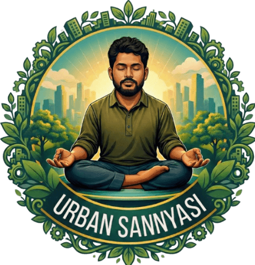

The Sarvesh Mishra Show
Episode blogs on mindset, clarity, leadership, and modern life realities.
Blog & writings
Essays, reflections, and research-based explorations on life, awareness, and human behavior. Written by Sarvesh Mishra to understand — not to impress.
Explore blogs inspired by episodes from all three YouTube channels.
Episode blogs on mindset, clarity, leadership, and modern life realities.
Episode blogs on inner intelligence, awareness, and emotional mastery.

Episode blogs on conscious urban living, purpose, and spiritual practicality.

Different topic clusters for readers decoding life deeply and practically.
How identity patterns shape thought, behavior, and long-term choices.
Understanding stress, restlessness, fear, and inner steadiness.
Moving from confusion and overthinking to grounded decision-making.
How awareness transforms attachment, conflict, and connection.
Designing meaningful direction through responsibility and alignment.
Inner depth without escape from work, ambition, and family life.
Filter by theme.
Everything you need to know about Sarvesh Mishra's long-form YouTube podcast — topics, guests, recording, and how to apply as a guest.
Read more —Sarvesh Mishra's 7-day YouTube series — one guest, one inner challenge, seven episodes of deep conversation and real transformation.
Read more —Saints, spiritual wisdom, and conscious living decoded for people fully engaged with modern urban life — without religion or escape.
Read more —Sarvesh Mishra's conscious living platform — structural inner work for people who want understanding, not just relief.
Read more —Most confusion is not in life, but in how we perceive thoughts, emotions, and identity.
Read more —Understanding how responsibility, ambition, and awareness can coexist — without escape.
Read more —Exploring how inner structure changes the experience of responsibility and decision-making.
Read more —A structured way to look at thoughts, emotions, and awareness without mysticism.
Read more —This is a growing body of work. Each piece is written to explore a specific aspect of human life — not as opinion, but as structured understanding. There are no ads. No interruptions. Only thinking.